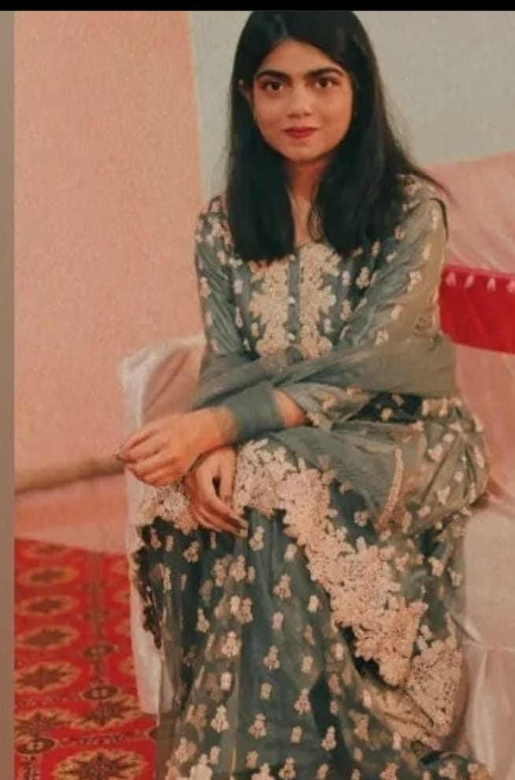

I am a dedicated and hardworking law student with a passion for justice and fairness.
I am currently pursuing my legal degree at a top university in India (PRESIDENCY UNIVERSITY,BANGLORE) and has excelled in my studies.
I has a keen interest in criminal law and has participated in several moot court competitions, honing my skills in legal research and argumentation.
In my free time, i enjoys reading about current legal affairs and volunteering at local legal aid clinics. Nisha is determined to use my education and skills to make a positive impact in the world.
ABOUT ME:
1 / 3
2 / 3

3 / 3
